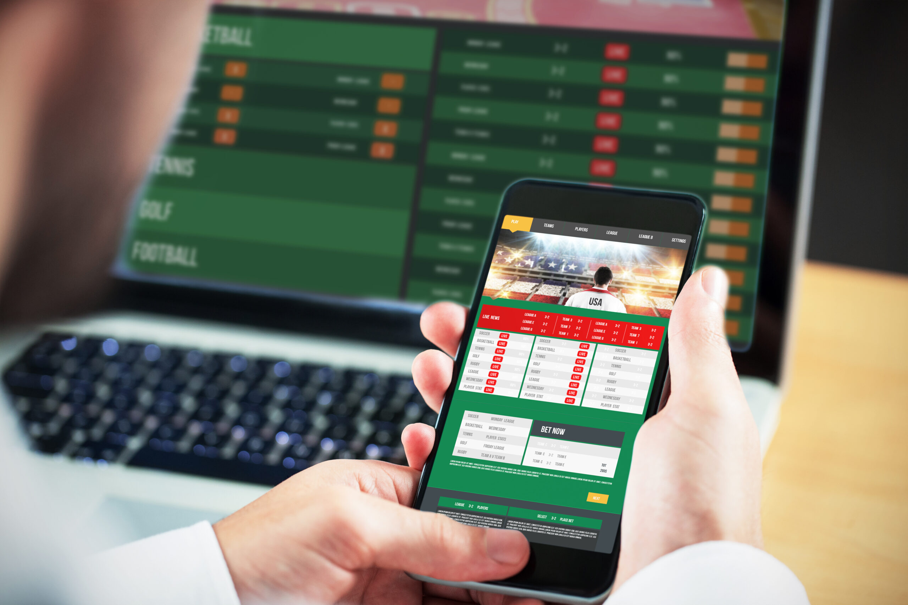
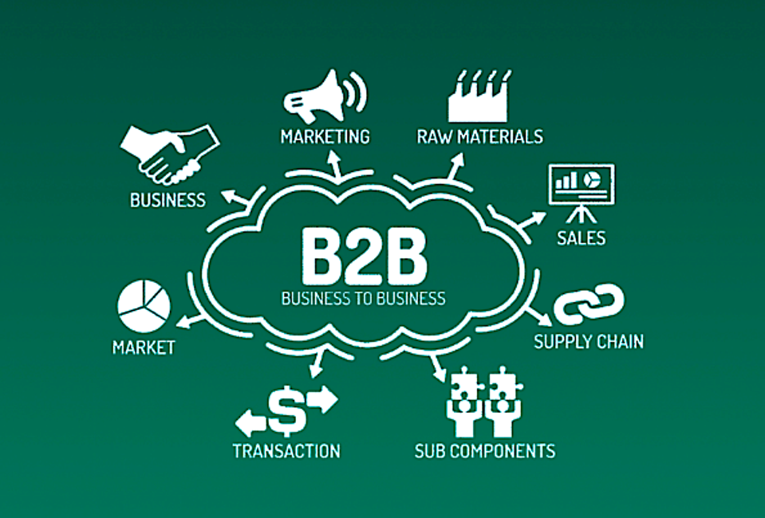

■ Projects
A selection of projects across different industries, highlighting my experience in business analysis, requirements engineering, stakeholder collaboration and Agile project delivery.
Energy
Role: Business Analyst | Additional Scrum Master Responsibilities
Served as the main Business Analyst for the development of a customer self-service platform for a major Greek energy provider. Involved throughout the product development lifecycle, from requirements gathering and analysis to development collaboration, testing and User Acceptance Testing (UAT).
Worked closely with business stakeholders and technical teams to clarify requirements, document user stories and present user flows. Also supported on-site UAT sessions, helping ensure that the delivered functionality aligned with business needs.
Alongside my Business Analyst responsibilities, I undertook Scrum Master activities, facilitating team ceremonies, coordinating day-to-day progress and maintaining regular communication with the client. The platform was successfully released to production and continues to evolve through further development.

Betting
Role: Business Analyst
Worked on an internal project for a major betting organization in Greece. Participated in technical workshops, documented user stories and Functional Requirements Specifications (FRS), and prepared data flows and other supporting business analysis documentation.

Insurance
Role: Business Analyst
Contributed to the development of a partner portal for a major insurance company in Greece. Collaborated with clients through online and on-site meetings, supported user story documentation and participated in backlog refinement sessions with Product Owners. This experience also provided exposure to insurance terminology and business processes.

B2B E-commerce
Role: Business Analyst
Supported the development of a B2B e-commerce platform for a major electrical equipment company in Greece. Participated in requirements-gathering sessions, documented user stories, prepared the Business Requirements Document (BRD) and delivered project demonstrations to stakeholders.
Corporate
Role: Manual Tester
Worked on an internal corporate project involving a leave management and working-hours reporting system. Initially focused on understanding business logic and functional requirements, then performed manual testing, identified defects and documented bugs to support the system’s quality and reliability.
European Borders
Role: Business Analyst
Contributed to the development of a mobile application for a European Union agency responsible for border management. Participated in stakeholder workshops, requirements gathering and refinement, and user story documentation and presentations. Collaborated with the UI/UX team on user flows and interface design, and supported the preparation of the user manual.
Mobile Health Awareness App (EU-Funded Initiative)
Role: Business Analyst
Contributed to a European public health initiative focused on developing a mobile application to raise cancer awareness and promote healthier lifestyles. Responsibilities included gathering and documenting requirements, writing user stories, supporting the definition of user flows and use cases, and assisting with the preparation of the user manual.